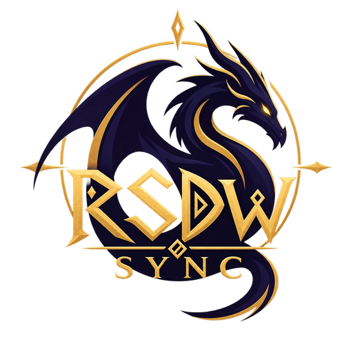

Electron interface
Full and Quick modes share one backend authority. The renderer has no unrestricted Node access; mutable work crosses bounded preload and JSON-RPC bridges.

DragonwildsSyncDragonwilds Sync is a desktop launcher, World-management suite, synchronization service, dedicated-runtime controller, mod coordinator, and optional remote-management layer. This page separates what exists today from what still needs real-world proof and what remains planned.
The launcher coordinates several systems without treating local profiles, public discovery, gameplay traffic, synchronization, and remote administration as interchangeable.
Full and Quick modes share one backend authority. The renderer has no unrestricted Node access; mutable work crosses bounded preload and JSON-RPC bridges.
Python owns Worlds, saves, settings, credentials, imports, backups, manifests, network configuration, and durable application state.
Verified World Runtime Workers own dedicated processes, logs, file sharing, watchdog behavior, publication, and orderly stop/update transitions.
Signed public World presence remains separate from direct reachability and separately authenticated remote administration.
These are implemented source-level capabilities in v3.0.4. Platform- or environment-dependent claims remain subject to the verification boundaries below.
Automated checks prove contracts and packaged smoke paths. They cannot certify every game, network, operating-system, or external-service behavior.
The Core stdio dispatcher handles one request at a time. UI deadlines are bounded, but they do not yet cooperatively cancel a Python operation; long-handler calibration and queue-pressure hardening continue.
The worker model supports one owner per active World, but simultaneous real-game isolation across config, save, and runtime roots is not yet a certified promise.
Router forwarding, UPnP, NAT loopback, CGNAT, VPN routing, firewall products, DNS, and WAN reachability depend on the host environment. VPN testing supports v3.0.4's external route fix but does not cover every topology.
The Ubuntu AppImage builds and passes automated smoke tests. A real Dragonwilds dedicated process under Proton/Wine, process-tree containment, and Windows-specific RSDW live bridges still require physical acceptance.
CI cannot prove real Dragonwilds process behavior, Steam/SteamCMD updates, live telemetry, console/spawner bridges, cross-machine joining, or exact map-coordinate calibration.
Clean-machine acceptance remains required. Installer-style Windows deployment is not the primary package contract, and self-update with active workers still needs explicit recovery and reattachment acceptance.
These items describe intended investigation and hardening. They are not shipped capabilities, release dates, or guaranteed platform commitments.
Explore a controller-first, touch-friendly GUI or presentation layer for Steam Deck, SteamOS, and similar handheld PCs. The likely direction is a focused shell over the existing backend rather than a second source of profile or runtime truth.
Carry cancellation into Core operations, make long-running work report bounded progress, and prove that timeout, close, and recovery leave no locks, listeners, or child processes behind.
Expand clean-host testing across real Dragonwilds installs, dedicated runtime behavior, external network paths, and supported Linux distributions before widening platform claims.
Exercise simultaneous hosted Worlds against real save, configuration, port, process, and recovery behavior before exposing it as a certified operational mode.
Continue improving worker recovery, self-update reattachment, actionable crash presentation, diagnostics, telemetry isolation, and operator-facing release evidence.
The project uses staged verification instead of treating a source check as release certification.
Candidate changes land on testing-branch.
Source contracts, backend regressions, authorization checks, and package workflows run against the exact commit.
Applicable packaged and physical workflows—including real network paths—are checked without converting unrun gates into passes.
The verified commit and coherent release metadata move to stable main.
See the singular release changelog or inspect the source-level capability and limitation documents on GitHub.